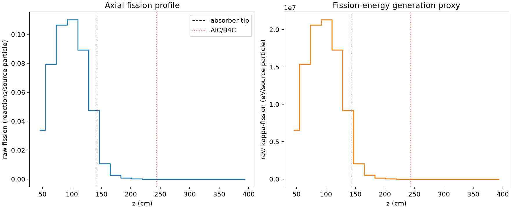
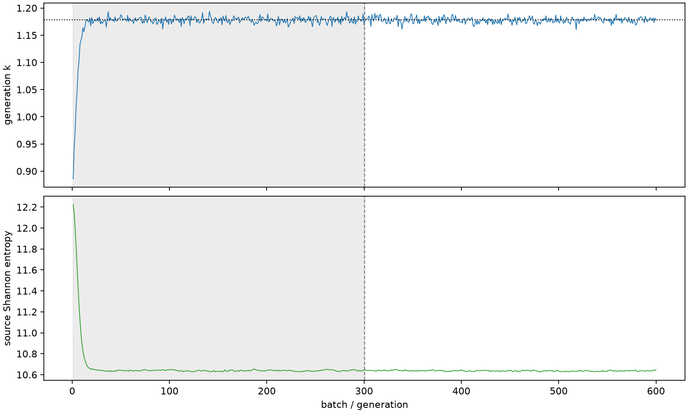

| field | value |
|---|---|
| experiment | V2-STAGE_256_OGRENCI_01-0019 |
| k | 1.1779334934002095 |
| MC standard error | 0.00020096948814714942 |
| seconds | 984.3216718840122 |
| acceptance | not_assessed |
| convergence | review_required |
Completed is output integrity only; physical and statistical review required. Zero tallies do not prove zero production or zero uncertainty.
| diagnostic | value |
|---|---|
| geometric fuel voxels | 5280 |
| zero fission tally voxels | 1180 |
| low signal fuel voxels | 2581 |
| low signal fission share | 0.0001150692179322499 |
| low signal kappa share | 0.00011510270456153669 |
| important fission share | 0.9502176530976159 |
| previous filter included | 2699 |
| duration estimate s | 1562.5173488400023 |
| actual minus estimate s | -578.1956769559902 |
| fission relative MC error | statistics |
|---|---|
| all_geometric_fuel | {"voxels": 5280, "positive_mean_voxels": 4100, "zero_mean_voxels": 1180, "undefined_relative_error_voxels": 1180, "median": 0.03222229358954398, "p95": 1.0, "maximum": 1.0000000000000002} |
| low_signal | {"voxels": 2581, "positive_mean_voxels": 1401, "zero_mean_voxels": 1180, "undefined_relative_error_voxels": 1180, "median": 0.7109325522524012, "p95": 1.0, "maximum": 1.0000000000000002} |
| important_95pct | {"voxels": 1506, "positive_mean_voxels": 1506, "zero_mean_voxels": 0, "undefined_relative_error_voxels": 0, "median": 0.005856733496369707, "p95": 0.009114820795561807, "maximum": 0.010392370498953758} |
| outside_previous_filter | {"voxels": 2581, "positive_mean_voxels": 1401, "zero_mean_voxels": 1180, "undefined_relative_error_voxels": 1180, "median": 0.7109325522524012, "p95": 1.0, "maximum": 1.0000000000000002} |
| kappa_fission relative MC error | statistics |
|---|---|
| all_geometric_fuel | {"voxels": 5280, "positive_mean_voxels": 4100, "zero_mean_voxels": 1180, "undefined_relative_error_voxels": 1180, "median": 0.03216757048874912, "p95": 1.0, "maximum": 1.0000000000000002} |
| low_signal | {"voxels": 2581, "positive_mean_voxels": 1401, "zero_mean_voxels": 1180, "undefined_relative_error_voxels": 1180, "median": 0.7109323597772167, "p95": 1.0, "maximum": 1.0000000000000002} |
| important_95pct | {"voxels": 1506, "positive_mean_voxels": 1506, "zero_mean_voxels": 0, "undefined_relative_error_voxels": 0, "median": 0.005850065553073236, "p95": 0.009104591796841094, "maximum": 0.010380592336202582} |
| outside_previous_filter | {"voxels": 2581, "positive_mean_voxels": 1401, "zero_mean_voxels": 1180, "undefined_relative_error_voxels": 1180, "median": 0.7109323597772167, "p95": 1.0, "maximum": 1.0000000000000002} |
| axial bin | fission share | kappa-fission share |
|---|---|---|
| 1 | 0.07052088533171605 | 0.07052283976275331 |
| 2 | 0.16534531840032812 | 0.16534263851292177 |
| 3 | 0.22165014091776258 | 0.22164630951744987 |
| 4 | 0.22880951691869103 | 0.22880532270107914 |
| 5 | 0.185538390976745 | 0.18553520578228186 |
| 6 | 0.09837154336763566 | 0.0983737833188722 |
| 7 | 0.022081993572870787 | 0.0220890879030452 |
| 8 | 0.00568034553197862 | 0.005682269155721089 |
| 9 | 0.0014710610639440563 | 0.0014715631324514855 |
| 10 | 0.0003925936686258126 | 0.00039272620526108735 |
| 11 | 0.00010642056825417619 | 0.00010645237573973521 |
| 12 | 2.311944259630846e-05 | 2.3129437031188313e-05 |
| 13 | 6.09627378360108e-06 | 6.098026216082614e-06 |
| 14 | 1.1382782839157477e-06 | 1.1386442917674924e-06 |
| 15 | 2.6357310923023057e-07 | 2.6356251627776167e-07 |
| 16 | 2.3638163298008279e-07 | 2.367476876265764e-07 |
| 17 | 6.414367581549607e-07 | 6.410313915501589e-07 |
| 18 | 2.53089466411413e-07 | 2.5298342880342253e-07 |
| 19 | 4.120581748344641e-08 | 4.119986006604273e-08 |
| 20 | 0.0 | 0.0 |
Histories include the inactive-to-active transition at batch 300. kappa-fission approximates fission energy production, not total heat deposition.

